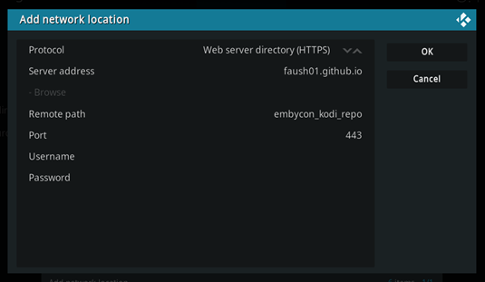

repository.embycon.zip
Installing Kodi Add-ons
- Install the EmbyCon repository using one of the options below
- Launch Kodi, open the settings and select Add-ons
- Scroll down and select "Install from repository"
- Scroll down and select "EmbyCon Addons"
- Now select the add-on you want to install
Option One - Direct download and install
With this approach you download the repo zip and install it directly.
- Download the repository zip file from the link at the top
- Save the downloaded repo zip file somewhere Kodi can access it
- In Kodi navigate to Add-ons and select "Install from zip file"
- If prompted with a security warning about unknown add-ons you will need to turn on "Unknown sources" in the add-on setting
- Using the file selector select the repo zip you downloaded
Option Two - Side load from HTTPS
Setup the HTTPS source
- In Kodi navigate to the File Manager and select "Add source"
- On the "Add file source" dialog select the "Browse" button then select "Add network location..."
- On the "Add network location" dialog enter the following:
| Protocol | : Web server directory (HTTPS) |
| Server address | : faush01.github.io |
| Remote path | : embycon_kodi_repo |
- Leave everything else and hit the "Ok" button, then hit Cancel and close the dialogs and go back to the home screen
- In Kodi navigate to Add-ons and select "Install from zip file"
- If prompted with a security warning about unknown add-ons you will need to turn on "Unknown sources" in the add-on setting
- You should now see https://faush01.github.io:443/embycon_kodi_repo as one of the sources available, select it
- This will show you the repo addon, select it to install
Kodi add network location setup
